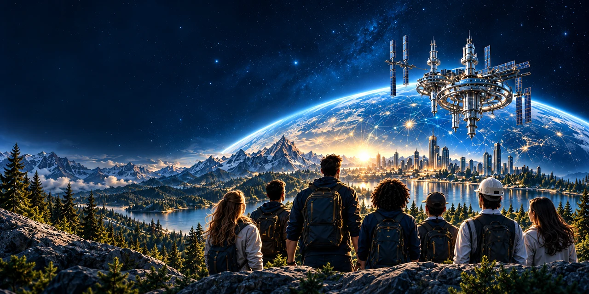
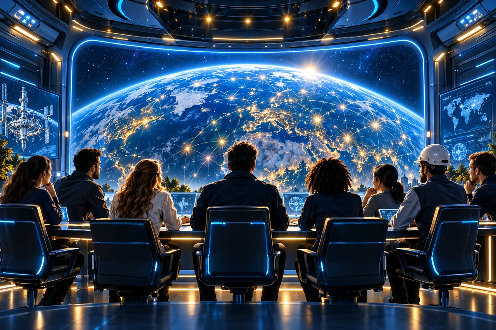

ЛЮДИ × ТЕХНОЛОГИИ × ЗНАНИЯ × РЕСУРСЫ
STATIONДЛЯ ЧЕЛОВЕЧЕСТВА
Мы объединяем людей, ИИ, машины, знания и ресурсы,
чтобы создавать ценность, которая возвращается
в жизнь — на Земле и за её пределами.
Одна планета.
Тысячи мечт.
Больше возможностей. ♡
чем просто проект
сообщество
действия
будущее
ИССЛЕДУЙТЕ НАПРАВЛЕНИЯ
Одна экосистема. Тысячи возможностей.

История большой мечты
От первого полёта до глобального сообщества. Как всё началось и куда мы идём.
Подробнее
Как работает система
От мечты человека к реальному результату. Прозрачный процесс, который объединяет всех.
Подробнее
Модули станции
Инфраструктура, где идеи становятся реальностью. Взаимосвязанные направления для людей и проектов.
Подробнее
Конституция станции
Люди. Достоинство. Мечты. Технологии. Общая ответственность.
Подробнее
Стань частью станции
Разные люди. Одна система. Найди своё место — с мечтой, навыками или ресурсами.
ПодробнееКАК РАБОТАЕТ СИСТЕМА
От мечты — к реальному результату.
- 1
Мечта
У каждого начинается с мечты.
- 2
Заявка
Превращаем мечту в конкретную задачу.
- 3
Команда
Находим людей и ресурсы.
- 4
Реализация
Создаём продукты и решения.
- 5
Результат
Проверяем, что получилось.
- 6
Рост
Больше людей. Больше возможностей.

ОТКРЫТО И ПРОВЕРЯЕМО